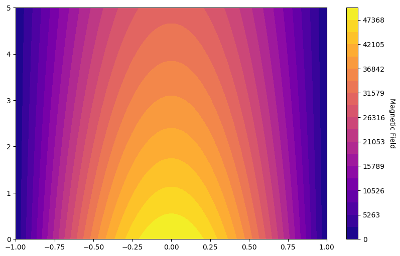
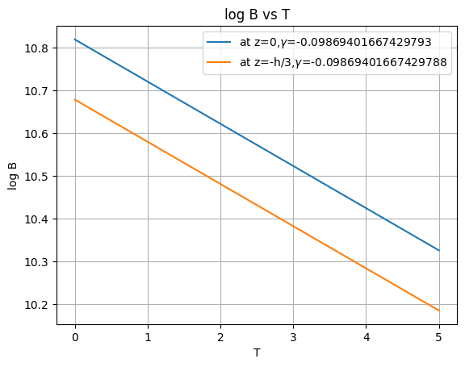
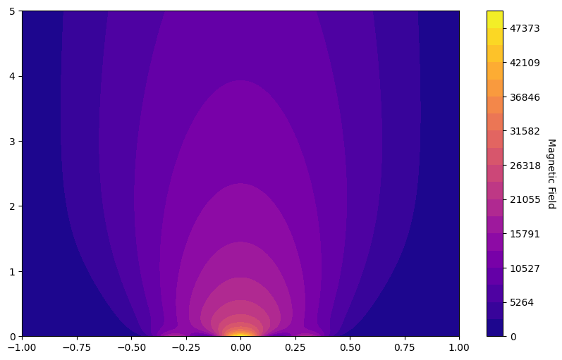
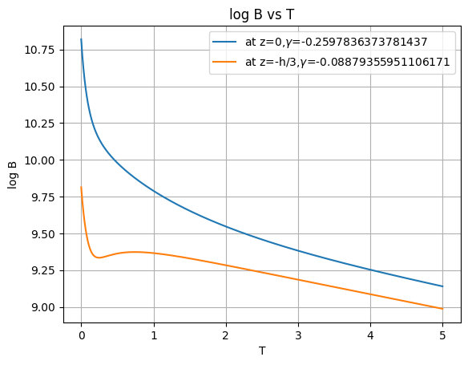

import math
import numpy as np
import matplotlib.pyplot as plt
from scipy.optimize import curve_fit# Parameters
eta = 1e-2 # Magnetic diffusivity
L = 1.0 # Length of the domain
T = 5.0 # Total time
Nx = 200 # Number of spatial grid points
Nt = 1000 # Number of time steps
def initial_condition(x,amp=50000):#sin wave
return amp * np.sin(np.pi *(x+1)/2)
def boundary_conditions(B):
B[0] = 0
B[-1] = 0
def crank_nicolson_magnetic_diffusion(x,t,eta, Nx, Nt, L, T,initial,boundary):
dx = L / Nx
dt = T / Nt
r = eta * dt / (2 * dx**2)
B = np.zeros((Nx+1, Nt+1))
B[:, 0] = initial(x)
A = np.diag((1 + 2 * r) * np.ones(Nx-1)) + np.diag(-r * np.ones(Nx-2), 1) + np.diag(-r * np.ones(Nx-2), -1)
B_matrix = np.diag((1 - 2 * r) * np.ones(Nx-1)) + np.diag(r * np.ones(Nx-2), 1) + np.diag(r * np.ones(Nx-2), -1)
for j in range(Nt):
boundary(B[:, j])
B[1:-1, j+1] = np.linalg.solve(A, np.dot(B_matrix, B[1:-1, j]))
return B
def calculate_B_i(eta,Nx,Nt,L,T,method=crank_nicolson_magnetic_diffusion,initial=initial_condition,boundary=boundary_conditions,show_graph=1):
# Grid
x = np.linspace(-1, 1, Nx+1) # Normalized spatial grid
t = np.linspace(0, T, Nt+1) # Time grid
dx = x[1] - x[0]
dt = t[1] - t[0]
# Solve magnetic field diffusion equation using Crank-Nicolson method
magnetic_field = method(x,t,eta, Nx, Nt, L, T,initial,boundary)
if show_graph==1:
# Contour
plt.figure(figsize=(10, 6))
levels = np.linspace(np.min(magnetic_field), np.max(magnetic_field), 20)
plt.contourf(x, t, magnetic_field.T, levels=levels, cmap='plasma')
cbar = plt.colorbar(label='Magnetic Field')
cbar.set_label('Magnetic Field', rotation=270, labelpad=15)
plt.show()
return magnetic_field
def decay_B(B,show_graph=1):
middle_index = len(B) // 2
thirds=len(B)//3
B_middle = B[middle_index, :]
B_thirds = B[thirds, :]
def exponential_func(t, B0, gamma):
return B0 * np.exp(gamma * t)
t_fit = np.linspace(0, T, Nt+1)
popt, pcov = curve_fit(exponential_func, t_fit, B_middle)#popt=[B0,gamma]
popt1, pcov1 = curve_fit(exponential_func, t_fit, B_thirds)
print("Gamma from z=0:", popt[1])
print("Gamma from z=-h/3:", popt1[1])
if show_graph:
log_B = np.log(B_middle)
log_B1 = np.log(B_thirds)
plt.plot(t_fit,log_B,label=f"at z=0,$\gamma$={popt[1]}")
plt.plot(t_fit,log_B1,label=f"at z=-h/3,$\gamma$={popt1[1]}")
plt.ylabel("log B")
plt.xlabel("T")
plt.title("log B vs T")
plt.grid()
plt.legend()
plt.show()
return(popt[1])
def get_pitch(MeanBR,MeanBPhi):
pitchvalues=[]
for i in range(0,len(MeanBR)):
pitchvalues.append(math.atan(MeanBR[i]/MeanBPhi[i]))
return pitchvalues
def get_mean_field_B(B_i):
meanB_t=[]
for i in range(0,len(B_i)):
meanB_t.append(np.mean(B_i[:,i]))
return meanB_tdef plot_all(eta,Nx,Nt,L,T,magnetic_field=calculate_B_i,method=crank_nicolson_magnetic_diffusion,initial=initial_condition,boundary=boundary_conditions,show_graph=1,show_decay=1):
B_z=magnetic_field(eta,Nx,Nt,L,T,method,initial,boundary,show_graph)
B_r=magnetic_field(eta,Nx,Nt,L,T,method,initial,boundary,0)
B_phi=magnetic_field(eta,Nx,Nt,L,T,method,initial,boundary,0)
gamma=decay_B(B_z,show_graph)
print(f"Decay($gamma$):{gamma}.")
pitch=np.mean(get_pitch(get_mean_field_B(B_r),get_mean_field_B(B_phi)))
print(f"Pitch angle {pitch} which is {pitch/np.pi}\u03C0 .")
return B_z
B_z=plot_all(eta,Nx,Nt,L,T,calculate_B_i)
Gamma from fit: -0.09869401667429793
Gamma from thrids: -0.09869401667429788

Decay($gamma$):-0.09869401667429793.
Pitch angle 0.7853981633974483 which is 0.25π .
Different Boundary Condition
def boundary_conditions_pm(B):
B[0] = 1000
B[-1] = 1000
B_z_pm=plot_all(eta,Nx,Nt,L,T,calculate_B_i,crank_nicolson_magnetic_diffusion,initial_condition,boundary_conditions_pm,1,1)
Gamma from fit: -0.09869401667429793
Gamma from thrids: -0.09869401667429788
Decay($gamma$):-0.09869401667429793.
Pitch angle 0.7853981633974483 which is 0.25π .
Different Initial Condition
def three_peak_initial(x,amp=50000):
peak1 = np.exp(-(x / 0.1) ** 2) # Peak at x = 0; x is normalised
peak2 = np.exp(-((x + 0.3) / 0.1) ** 2) # Peak at x = -0.3
peak3 = np.exp(-((x - 0.3) / 0.1) ** 2) # Peak at x = 0.3
return amp*(1 * peak1 + 0.4 * peak2 + 0.4 * peak3)
B_z_3_peak=plot_all(eta,Nx,Nt,L,T,calculate_B_i,crank_nicolson_magnetic_diffusion,three_peak_initial,boundary_conditions,1,1)
Gamma from fit: -0.2597836373781437
Gamma from thrids: -0.08879355951106171

Decay($gamma$):-0.2597836373781437.
Pitch angle 0.7853981633974483 which is 0.25π .
def one_peak_initial(x,amp=50000):
peak1 = np.exp(-(x / 0.1) ** 2)
return amp*(peak1)
B_z_1_peak=plot_all(eta,Nx,Nt,L,T,calculate_B_i,crank_nicolson_magnetic_diffusion,three_peak_initial,boundary_conditions,1,1)Gamma from fit: -0.2597836373781437
Gamma from thrids: -0.08879355951106171
Decay($gamma$):-0.2597836373781437.
Pitch angle 0.7853981633974483 which is 0.25π .